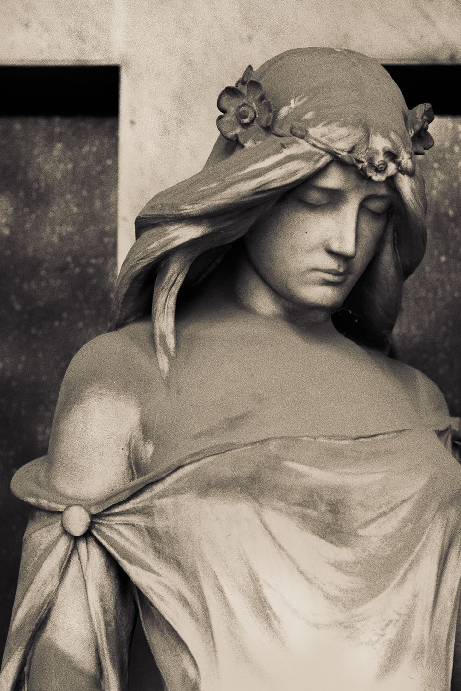
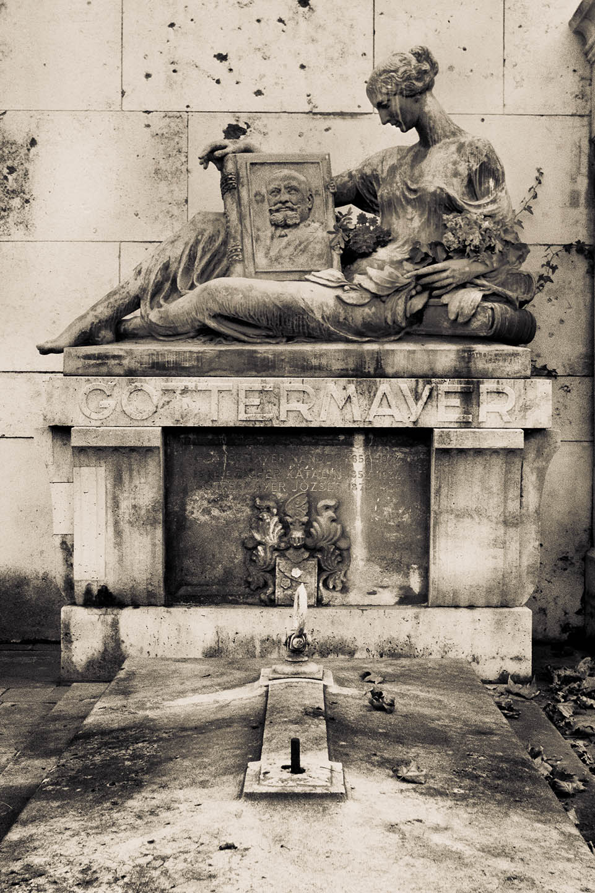
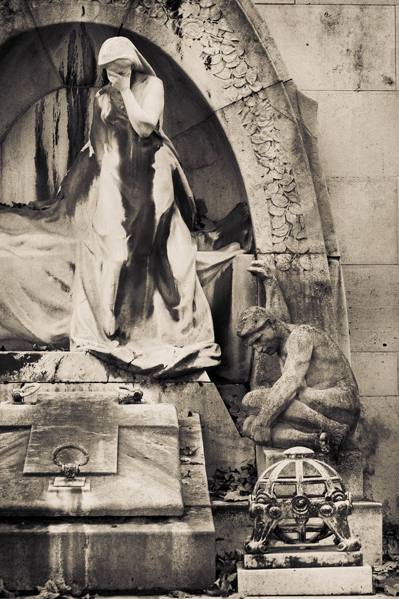
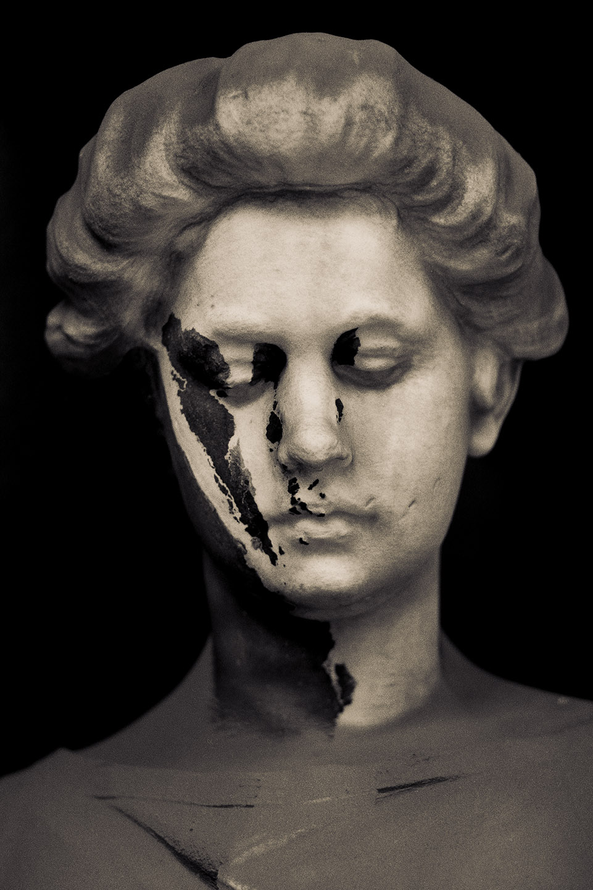

Angel Couple — Kerepes Cemetery, Budapest, Hungary, 2005
Bearded Old Man — Kerepes Cemetery, Budapest, Hungary, 2005
Female Torso — Kerepes Cemetery, Budapest, Hungary, 2005
Ghoulish Face — Kerepes Cemetery, Budapest, Hungary, 2005

Girl and Cross #1 — Kerepes Cemetery, Budapest, Hungary, 2005
Girl and Cross #2 — Kerepes Cemetery, Budapest, Hungary, 2005
Girl Contemplating — Kerepes Cemetery, Budapest, Hungary, 2005

Gottermayer Family Grave — Kerepes Cemetery, Budapest, Hungary, 2005

Grave with Lady and Man — Kerepes Cemetery, Budapest, Hungary, 2005
Hand — Kerepes Cemetery, Budapest, Hungary, 2005
Headless Boy — Kerepes Cemetery, Budapest, Hungary, 2005
Hooded Woman — Kerepes Cemetery, Budapest, Hungary, 2005
Lady Sitting on a Chair — Kerepes Cemetery, Budapest, Hungary, 2005
Roman Head — Kerepes Cemetery, Budapest, Hungary, 2005
Slumbering Angel — Kerepes Cemetery, Budapest, Hungary, 2005

Smudged Female Face — Kerepes Cemetery, Budapest, Hungary, 2005
Statue of a Woman Overgrown with Foliage — Kerepes Cemetery, Budapest, Hungary, 2005
Two Ladies — Kerepes Cemetery, Budapest, Hungary, 2005
Weeping Girl — Kerepes Cemetery, Budapest, Hungary, 2005
Weeping Woman — Kerepes Cemetery, Budapest, Hungary, 2005
Woman and Capital — Kerepes Cemetery, Budapest, Hungary, 2005